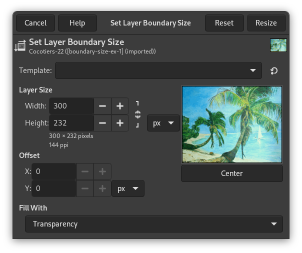
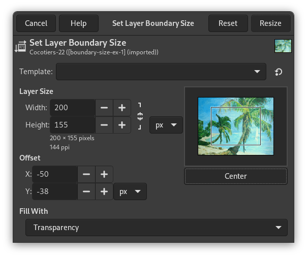

In GIMP, each layer has its own size that can be changed independently of the size of the image. This command changes the dimensions of a layer, but it does not scale its contents.
![[Note]](images/note.png)
|
Note |
|---|---|
|
By default, painting outside the borders of a layer is ignored. You can, however, enable the Expand Layers setting in the Paint Tool Options, which will automatically extend the size of the layer when painting near one of its borders up to the size of the canvas. |
-
You can access this command from the main menu through → .
-
From the Layers Dialog, you can access it through the command of its context menu.
- Template
-
This drop-down list allows you to pick a size from one of the available image templates. For more information on templates see Create a New Image or the Templates Dialog.
When choosing a template that has a different print resolution (ppi) than your image, two new buttons will appear that ask you how to adjust this.
will adjust the template to the ppi of the image; and will adjust the image to the ppi of the template.
- Layer Size
-
- Width, Height
-
When the dialog is displayed, the original dimensions of the active layer are shown. You can change them by using the two text boxes. If these boxes are linked together with a
 chain, the width-to-height ratio is automatically
maintained. If you break the chain by clicking on it, you
can set the dimensions independently of each other.
chain, the width-to-height ratio is automatically
maintained. If you break the chain by clicking on it, you
can set the dimensions independently of each other.
- Unit of Measurement
-
The default unit of measurement is pixels. You can change this by using the drop-down menu. For instance, you might use a “%” of the current size.
- Offset
-
- X, Y
-
These coordinates are relative to the layer, not to the image. They are used to move a frame that determines which part of the layer content will be selected for the resized layer. In our example, the layer and the content have the same dimensions, and, of course, you have no frame to move. If you reduce Width and Height , the frame of the resized layer appears in the preview.
- A Preview of the layer inside the frame of the canvas
-
Besides the layer dimensions, a preview represents the layer with the frame of the resized layer. You can move this frame using the X and Y offsets and also dragging the cross-shaped cursor that appears when the mouse pointer moves over the layer area.
- Center
-
The button allows you to place the frame at the center of the layer.
- Fill With
-
This allows you to select how to fill the background of the layer when you increase its size. The same options are available here as in the Create New Image Dialog.
- Increasing the size of a layer
-
You can't make the size of a layer larger than the image canvas.
If the layer is smaller than the image, you can enlarge the Width and/or Height. If you want to enlarge the layer to the size of the image, it is easier to use Layers to Image Size.
- Reducing the size of a layer
-
If you want to remove unused parts of a layer, you can reduce the size.
Figure 16.117. Example

The selected layer for resizing

The frame representing the new layer size. It has been placed at the center of the layer using the button.
If the image has only one layer, it can be more convenient to use the Crop tool.